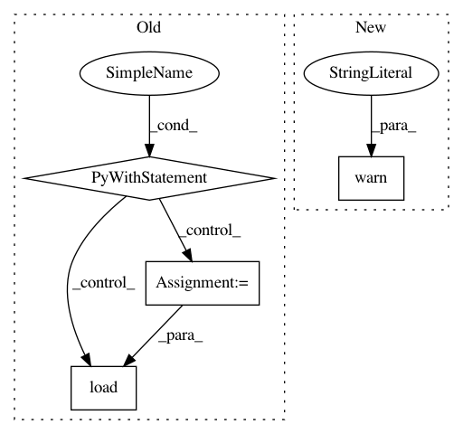

b56a4b355dfc302fa449d223e065af3a7acac986,snorkel/learning/pytorch/noise_aware_model.py,TorchNoiseAwareModel,load,#TorchNoiseAwareModel#Any#Any#Any#,252
Before Change
model_dir = os.path.join(save_dir, model_name)
// Load model kwargs needed to rebuild model
with open(os.path.join(model_dir, "model_kwargs.pkl"), "rb") as f:
model_kwargs = load(f)
// Create new graph, build network, and start session
self._build_new_graph_session(**model_kwargs)
// Initialize variables
with self.graph.as_default():
After Change
Load model from file and rebuild in new graph / session.
model_name = model_name or self.name
model_dir = os.path.join(save_dir, model_name)
warnings.warn("Unstable! Please extensively test this part of the code when time permits")
self.load_state_dict(
torch.load("{}/model.params".format(model_dir))
)
In pattern: SUPERPATTERN
Frequency: 3
Non-data size: 4
Instances
Project Name: snorkel-team/snorkel
Commit Name: b56a4b355dfc302fa449d223e065af3a7acac986
Time: 2018-05-03
Author: dnicholson329@gmail.com
File Name: snorkel/learning/pytorch/noise_aware_model.py
Class Name: TorchNoiseAwareModel
Method Name: load
Project Name: biolab/orange3
Commit Name: 7b17d670d0c9511b742e72e42f4f12ed0cb652bf
Time: 2018-04-26
Author: ales.erjavec@fri.uni-lj.si
File Name: Orange/canvas/config.py
Class Name:
Method Name: open_config
Project Name: dnouri/skorch
Commit Name: 1c87b36da51ee3efe13bd3d31cf27ba81af33ce2
Time: 2018-10-22
Author: thomasjpfan@gmail.com
File Name: skorch/net.py
Class Name: NeuralNet
Method Name: load_history